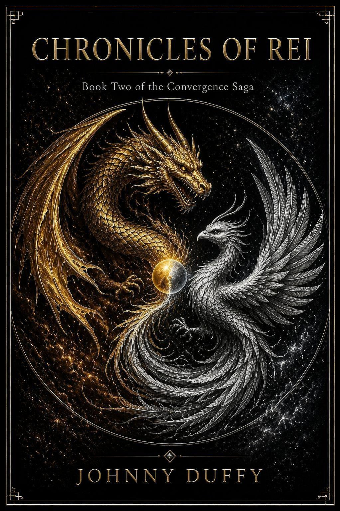
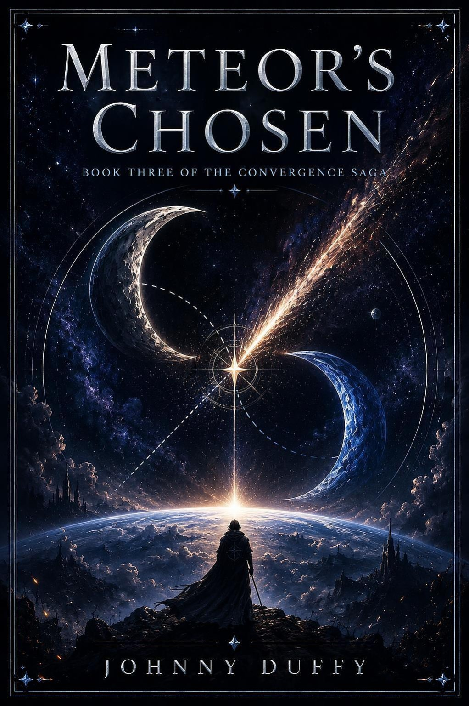
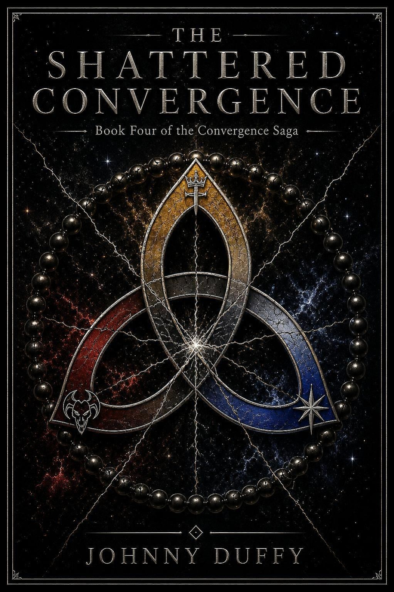

BOOK ONE
BOOK ONEHellbound Luck
Jake Morrison discovers that a lifetime of impossible luck was preparation for an inheritance tied to Hell itself.
Discover Book One →JOHNNY DUFFY PRESENTS
Four worlds. Four destinies. One fracture running through them all.
Reality was never as separate as it seemed. Enter a saga of demons, dragons, broken worlds, inherited power, and the people forced to decide what they become when destiny stops asking permission.
THE CONVERGENCE SAGA
Each novel carries its own world, mythology, and visual identity while moving toward a larger convergence.
BOOK ONEJake Morrison discovers that a lifetime of impossible luck was preparation for an inheritance tied to Hell itself.
Discover Book One →
BOOK TWOA wounded warrior, a stolen kingdom, a hidden bloodline, and a power that refuses to remain asleep.

BOOK THREEA family passes through a broken sky into a world where names, memory, and reality itself carry power.

BOOK FOURThree realities collapse toward a conflict older than the first star—and the truth connecting them can no longer stay buried.
BOOK ONE · THE STORY BEGINS
Bad luck was only the beginning.
Jake Morrison thought he was cursed with bad luck. What he discovers is far worse—and far more powerful. When his true bloodline is revealed, Jake is pulled into a hidden world of demons, hunters, celestial powers, and ancient conflicts that have been waiting for someone exactly like him.
Guided by Lilith, an eight-hundred-year-old demon hunter, Jake must learn what he is without allowing his inheritance to decide who he becomes. The deeper the hunt goes, the clearer one truth becomes: Hell is not the only side preparing for war.
“Jake Morrison didn’t choose his inheritance. He chose what to do with it.”
ABOUT THE AUTHOR
Johnny Duffy has spent a lifetime doing jobs that chose him before he fully understood what he was signing up for. As a former firefighter and current deputy sheriff, he knows what it means to walk toward trouble while everyone else walks away—and to find, in the doing of it, something that starts to resemble purpose.
During his younger years, Johnny traveled widely, chasing experience the way some people chase certainty. He came home with a deep belief that the best stories begin not with a plan, but with a door opening at the wrong moment.
Hellbound Luck is his debut novel and the opening volume of the Convergence Saga.
FOLLOW THE CONVERGENCE
Book releases, purchase links, audiobook news, artwork, trailers, and author updates will appear here as they go live.
Email becomes active after a domain mailbox or forwarding is configured.